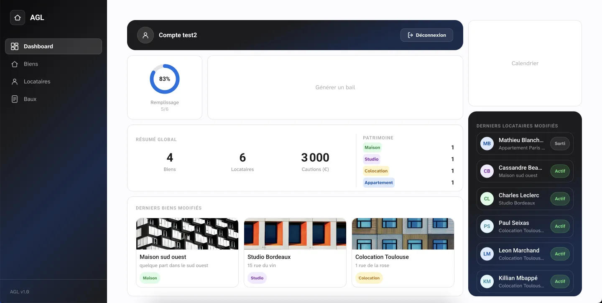
Morgan Hassouna
Développeur web junior
En recherche d'alternance
À propos
J'ai mis du temps à trouver ce que je voulais faire. Des études en droit, puis en langues étrangères, plusieurs années de travail alimentaire en attendant — rien qui me projetait vraiment. La programmation, je l'ai croisée par hasard, en suivant des cours gratuits et des vidéos. Ça a pris, et je me suis inscrit à la formation.
Titre professionnel Développeur Web et Web Mobile obtenu en juin 2026. Je cherche maintenant une alternance pour enchaîner sur le titre Concepteur Développeur d'Applications — et surtout pour travailler aux côtés de gens du métier, ce qui compte le plus à mes yeux à ce stade. Paris en priorité, Bordeaux et Toulouse également.
Le front-end est ce qui me parle le plus pour l'instant, sans que ce soit une frontière : le back m'intéresse de plus en plus, et je ne m'interdis pas de découvrir autre chose que le web.
Projets
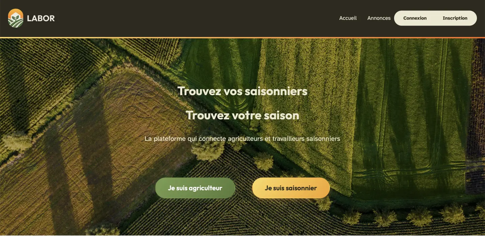
Labor
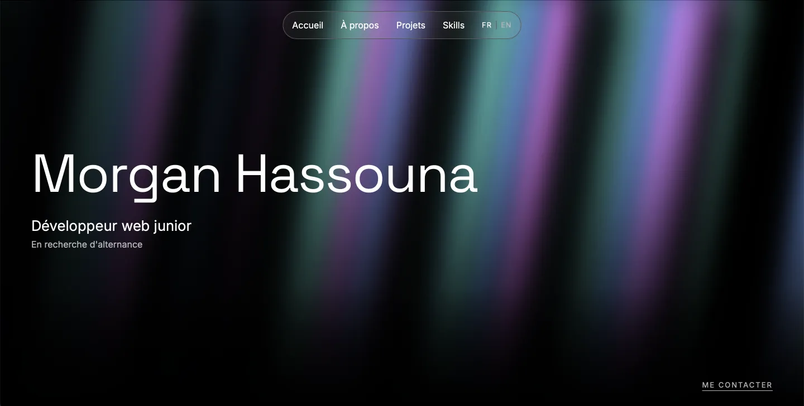
Portfolio
FULL-STACK
MVP terminé
AGL
Next.js 15 · TypeScript · PostgreSQL · Prisma · Better Auth · Zod
AGL répond à un besoin observé autour de moi : des propriétaires qui jonglent entre tableurs, mails et documents papier. L'application centralise biens, locataires et informations administratives, et génère automatiquement les baux en PDF, l'étape que les bailleurs jugeaient la plus pénible.
C'est cette génération qui m'a demandé le plus de travail : transformer les données (dates, montants, loyer total, lieu de signature), les fusionner dans un template, puis produire et stocker le PDF. La fonctionnalité est découpée en quatre modules orchestrés par une seule route.
Projet mené seul de bout en bout, avec un workflow calqué sur un travail d'équipe : milestones, branches, Pull Requests. Le MVP a validé mon titre DWWM en juin 2026 ; la V1.5 portera sur le déploiement.
FRONT-END
Projet de groupe · Stage — arrêté
Labor
React · TypeScript · Vite · CSS
Labor met en relation des agriculteurs et des travailleurs saisonniers, en s'adressant à l'ensemble de l'espace francophone plutôt qu'au seul marché français. Le projet a été mené en équipe pendant un stage de deux mois, avec trois développeurs sur la partie front.
Comme lead front, j'ai posé l'identité visuelle du projet : logo et charte graphique v1, utilisée comme référence par l'équipe. Côté code, j'ai défini l'architecture front, les conventions et le design system en tokens CSS, puis développé une partie des tickets : routing, mocks MSW, composants, layouts et landing page.
Le projet s'est arrêté à la fin du stage, aux deux tiers du MVP maquetté. Fondations, design system et landing page sont en place ; les espaces agriculteur et saisonnier n'ont pas été terminés.
FRONT-END
En évolution
Portfolio
HTML · CSS · JavaScript
Ce site présente mes projets et en est un lui-même : le code est public, et c'est là que j'expérimente en CSS et JavaScript natifs.
J'ai choisi de l'écrire sans framework. Pour une page vitrine, HTML, CSS et JavaScript me suffisaient, et travailler sans couche d'abstraction m'oblige à comprendre ce que je manipule. Avec AGL, ce sont les deux projets de ma première année que je compte faire vivre : l'un pour apprendre un écosystème complet, l'autre pour revenir aux fondamentaux.
Je l'envisage comme une vitrine amenée à évoluer au fil de mes envies de tester de nouvelles choses. Le code est organisé dans cet esprit : styles centralisés en variables CSS, et un JavaScript découpé en modules autonomes, chacun se désactivant proprement si la section qu'il pilote n'est pas là.
FULL-STACK
AGL
Next.js 15 · TypeScript · PostgreSQL · PrismaApplication de gestion locative full-stack : biens, locataires, baux et génération automatique de contrats PDF. Projet de certification DWWM.
AGL
AGL répond à un besoin observé autour de moi : des propriétaires qui jonglent entre tableurs, mails et documents papier. L'application centralise biens, locataires et informations administratives, et génère automatiquement les baux en PDF, l'étape que les bailleurs jugeaient la plus pénible.
C'est cette génération qui m'a demandé le plus de travail : transformer les données (dates, montants, loyer total, lieu de signature), les fusionner dans un template, puis produire et stocker le PDF. La fonctionnalité est découpée en quatre modules orchestrés par une seule route.
Projet mené seul de bout en bout, avec un workflow calqué sur un travail d'équipe : milestones, branches, Pull Requests. Le MVP a validé mon titre DWWM en juin 2026 ; la V1.5 portera sur le déploiement.
FRONT-END
Labor
React · TypeScript · VitePlateforme de mise en relation entre agriculteurs et travailleurs saisonniers. Projet de groupe réalisé en stage, où j'étais lead front.
Labor
Labor met en relation des agriculteurs et des travailleurs saisonniers, en s'adressant à l'ensemble de l'espace francophone plutôt qu'au seul marché français. Le projet a été mené en équipe pendant un stage de deux mois, avec trois développeurs sur la partie front.
Comme lead front, j'ai posé l'identité visuelle du projet : logo et charte graphique v1, utilisée comme référence par l'équipe. Côté code, j'ai défini l'architecture front, les conventions et le design system en tokens CSS, puis développé une partie des tickets : routing, mocks MSW, composants, layouts et landing page.
Le projet s'est arrêté à la fin du stage, aux deux tiers du MVP maquetté. Fondations, design system et landing page sont en place ; les espaces agriculteur et saisonnier n'ont pas été terminés.
FRONT-END
Portfolio
HTML · CSS · JavaScriptPortfolio personnel en HTML, CSS et JavaScript vanilla. Vitrine de mon travail autant que terrain d'expérimentation.
Portfolio
Ce site présente mes projets et en est un lui-même : le code est public, et c'est là que j'expérimente en CSS et JavaScript natifs.
J'ai choisi de l'écrire sans framework. Pour une page vitrine, HTML, CSS et JavaScript me suffisaient, et travailler sans couche d'abstraction m'oblige à comprendre ce que je manipule. Avec AGL, ce sont les deux projets de ma première année que je compte faire vivre : l'un pour apprendre un écosystème complet, l'autre pour revenir aux fondamentaux.
Je l'envisage comme une vitrine amenée à évoluer au fil de mes envies de tester de nouvelles choses. Le code est organisé dans cet esprit : styles centralisés en variables CSS, et un JavaScript découpé en modules autonomes, chacun se désactivant proprement si la section qu'il pilote n'est pas là.
Skills
Utilisées en projet En cours d'apprentissage
HTML5
CSS3
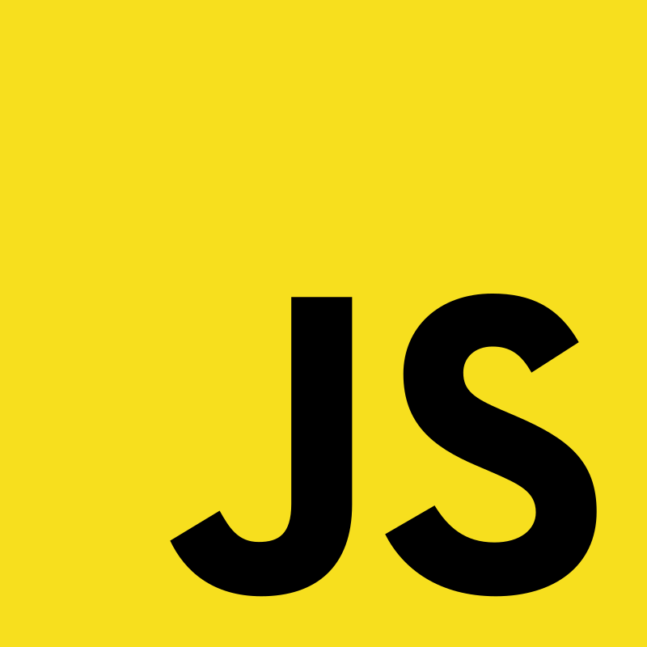
JavaScript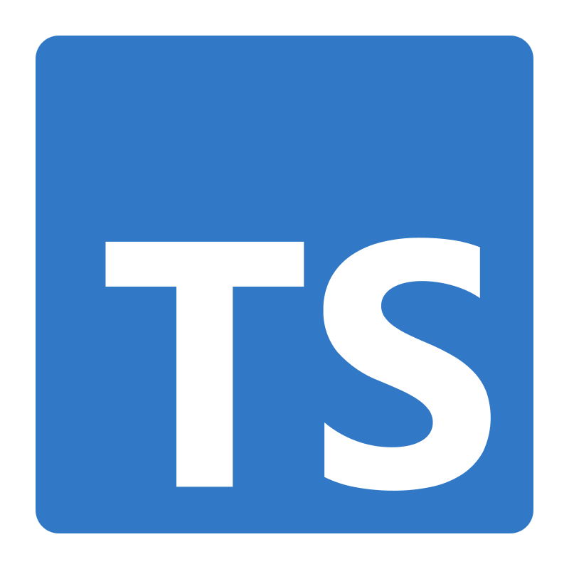
TypeScript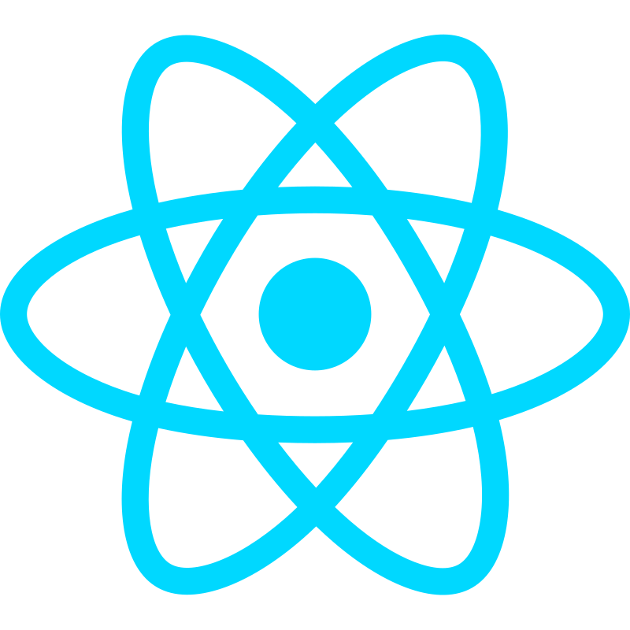
ReactNext.js
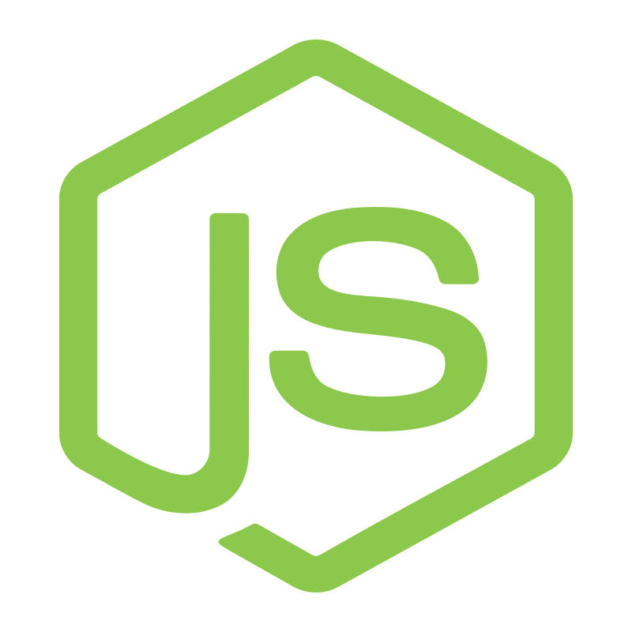
Node.jsTailwindCSS
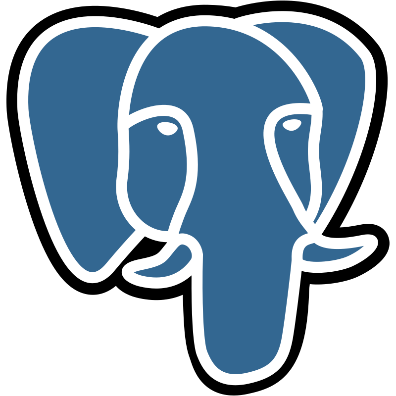
PostgreSQL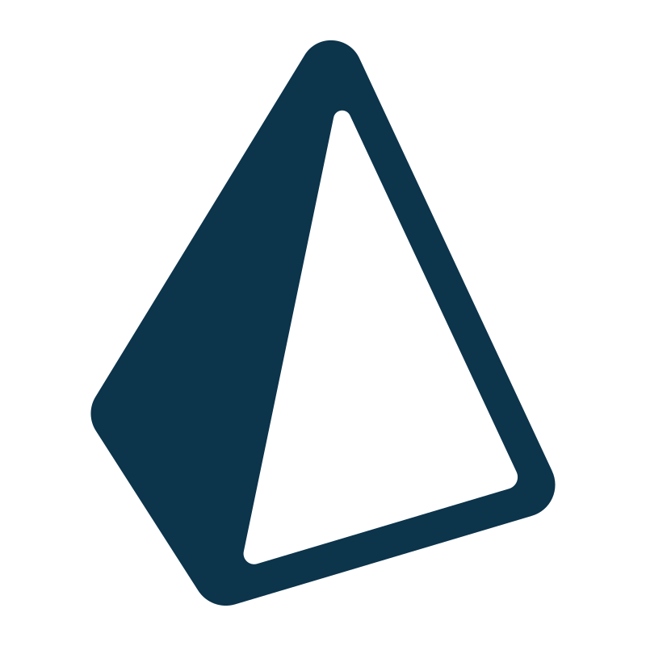
Prisma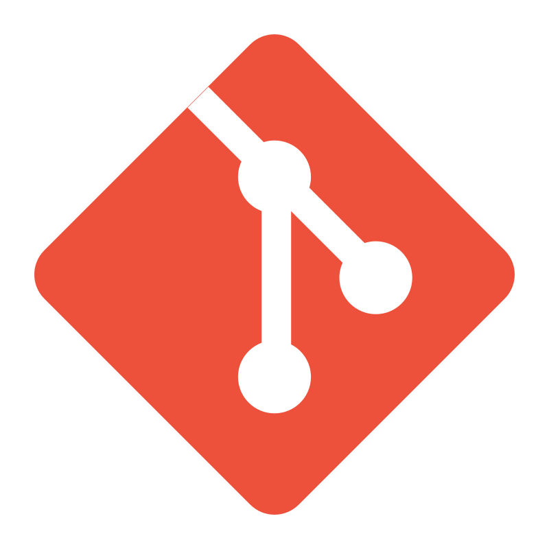
Git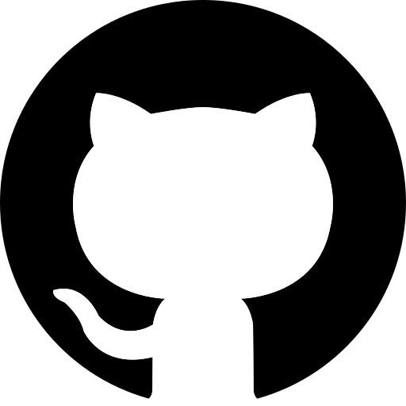
GitHub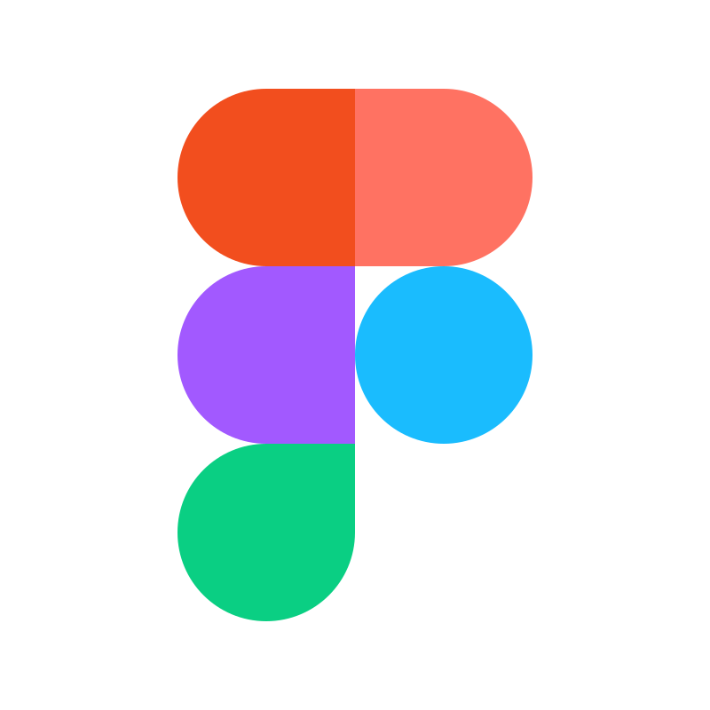
Figma
Redux
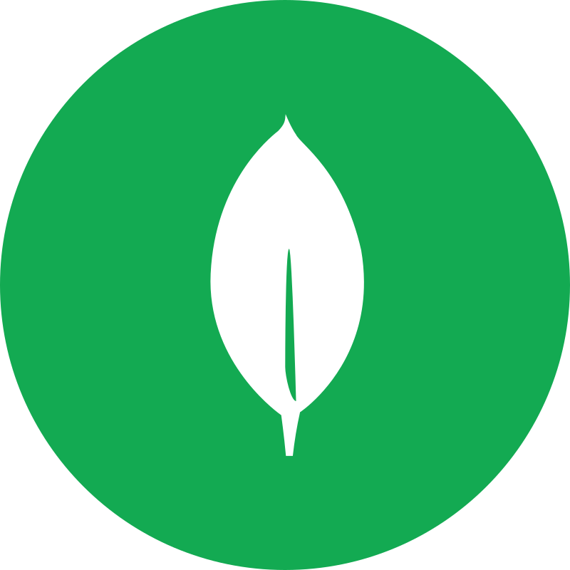
MongoDB